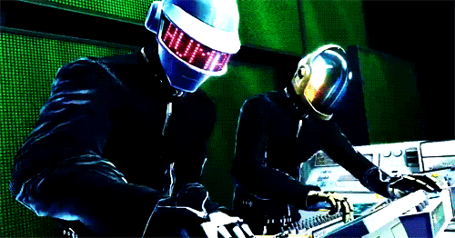

Daft Punk:
El dúo francés de música electrónica Daft Punk, identificables por sus cascos de robot, anunció el 22 de febrero .
su separación después de casi tres décadas de existencia y un buen puñado de éxitos que pusieron a bailar al mundo. En Francia de donde son originarios se apaga un mito musical y de comunicación.
toda la biografia esta dando click a la imagen.
